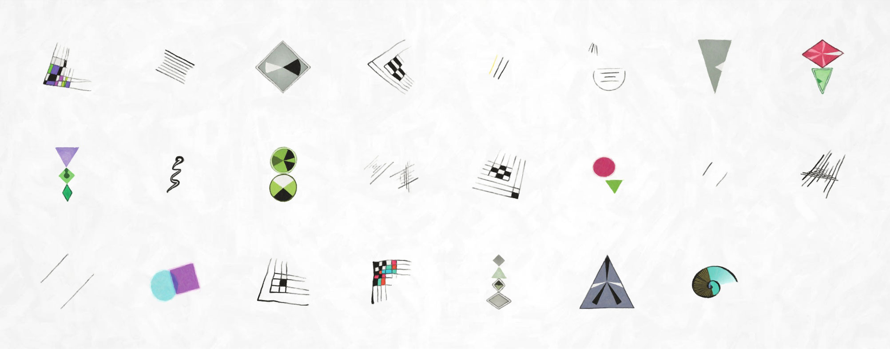

DNArtworks are supposed to look like paintings, or at least like prints of paintings – with realistic brush strokes and no unnaturally straight lines:

Now a human may find it easier and faster to draw a sloppy picture than a neat one, but computers are the other way round. Drawing perfect geometric shapes is easy, but it takes much longer to make authentic-looking imperfections, both in terms of development effort and rendering time.
The largest downloadable size of DNArtwork is over 160 megapixels, and generating it from scratch takes several minutes of CPU time and hundreds of megabytes of memory. In principle it would be possible to do this work on a virtual machine in the cloud, by queueing artworks and generating one at a time, but if several people ask for an artwork at the same time, the wait could get pretty long.
I’ve developed a system that generates artwork images almost instantly using less 1% of memory required to hold the full artwork image. It achieves this by doing most of the work before deployment, and using an online rendering engine custom-built in C++.
Step 1: Plain shape rendering
When your favourite tool is a hammer, every problem starts to look like a nail. I decided to use JavaScript canvas to generate the shapes, even though this part of the project doesn’t need to run in a web browser, just because I’m used to it. There are 6 kinds of shape:

A different JavaScript program generates around 800 variations of each shape.
The trick here is controlled sloppiness. The art of Wassily Kandinsky upon which the graphical style is based may be chaotic, but it is not random. Here’s an example of how the moustache shape above is built up.
I start with a checkerboard grid. The number of rows and columns varies between shapes, various lines are shortened and removed, and colours are chosen semi-randomly – the first colour is truly random, then subsequent colours are chosen to go well with it using colour compliments, triads or tetrads. This produces substantial variation between shapes, but it looks very regular:
Applying a random rotation and perspective transformation to the shape adds more variation:
A little more randomness applied to the angle of each line:
Varying the width of each line as it is drawn produces an effect a little like calligraphy – but the lines are still a little straight:
Finally, the shape is fed through a WebGL-powered 2D simplex noise distortion shader that bends all those straight lines:
The shape is now looking handsomely messy, as if drawn by hand, but the edges still have the razor-sharp, noise-free look that is the hallmark of computer generated graphics.
Step 2: Applying the paint effect
The shapes you’ve seen so far are all rendered in a web browser. JavaScript running in a web browser can’t save files, but it can make HTTP requests, so each shape is encoded as a PNG file and posted to a little Node.js script that saves it to disk. The images are then processed with the Photoshop plugin Snap Art, which produces the paint effect:
Step 3: Online rendering
Each artwork has 23 shapes, and each shape takes the best part of a minute to generate, so a full artwork should take several minutes to generate. However while there are are 8×1052 different possible artworks, there are only a few thousand different shapes which are repeated between artworks. This is all part of the design – the more closely related two people are, the more identical shapes will appear in the same positions in each of their artworks. So it’s possible to render a painted image of each shape in advance, and then generate a full artwork image by combining many smaller images into a large one.
Rendering a copy of each shape, in several different sizes, took around 3 days with my poor little laptop overheating and running its fans full power. The resulting images were uploaded to a virtual machine in the Microsoft Azure cloud.
The first version of the server program to generate the artwork collage took the obvious route:
- open and decompress the JPEG file containing the painted background, which produces a full size image in memory
- open and decompress each shape file in turn and superimpose it onto the background
- compress the background again and serve it as the HTTP response
This is acceptably fast – about a second for small images and 20 seconds for very large images. And while it uses a lot of memory – around 300MB for a very large image – by using Azure Functions you only pay for the memory usage for the few seconds that the function is running, so it’s affordable.
Still, I figured I could do better, and so I wrote a custom rendering engine in C++. This uses libjpeg-turbo to process JPEG images line by line, so that only one full row of the image pixels needs to be held in memory at any moment. The new rendering engine is about 3 times faster – it takes 7 seconds instead of 20 to generate a large image. But the improvement in waiting time is better than 300% because of streaming. The old engine had to generate the whole image before sending any data, which caused a message to hang at the bottom of the browser window for 20 seconds saying “waiting for dnartwork.com…”. The new rendering engine can start serving the first rows of image data after half a second, then generate the rest of image image while the first bit is being downloaded. So in terms of responsiveness, the new engine is more like 40 times faster.
The result
Here’s a 23000 x 8000 image (550 megapixel, i.e. don’t blame me if it crashes your browser!) that took 7 seconds and 300KB of memory to generate.
For more posts in this series, check out the DNArtwork category on this blog.